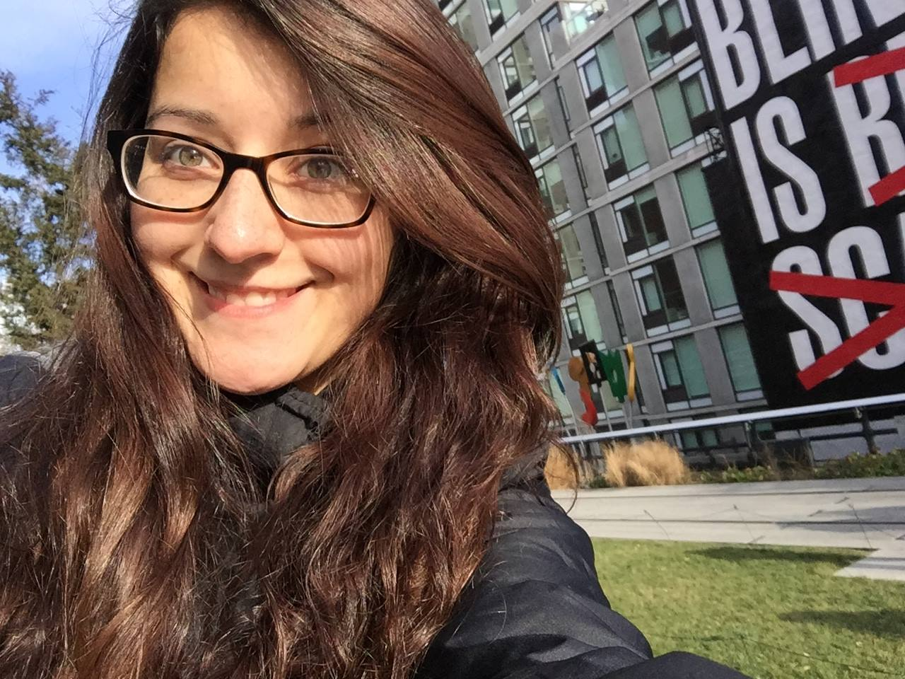
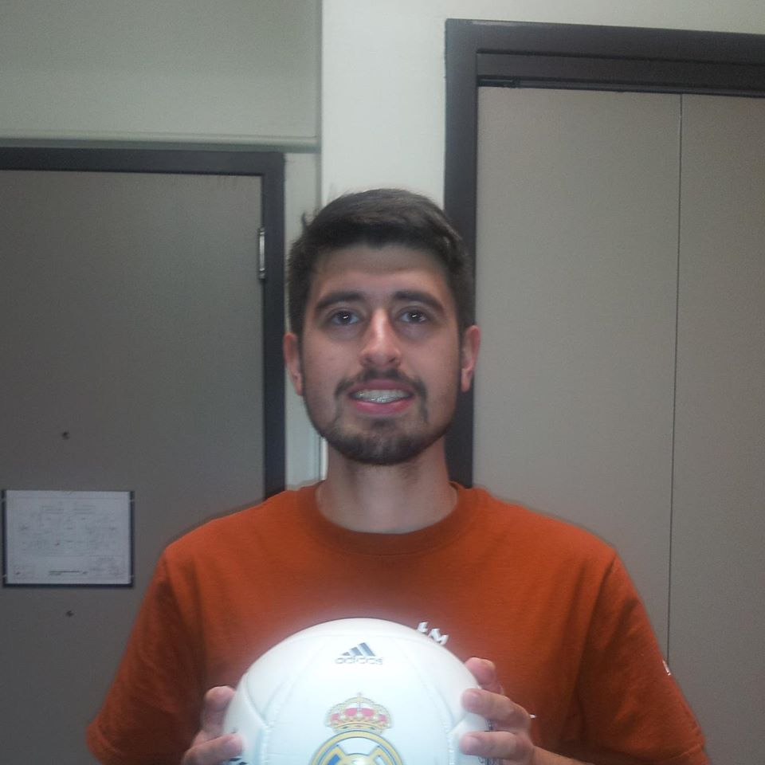
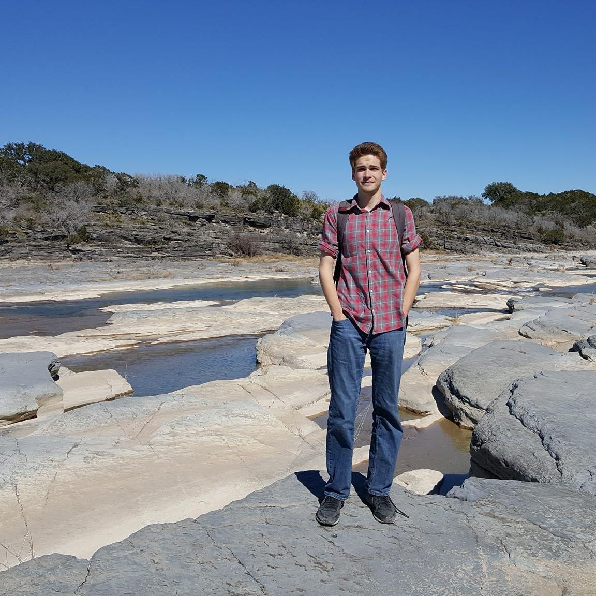
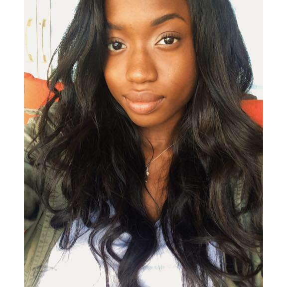
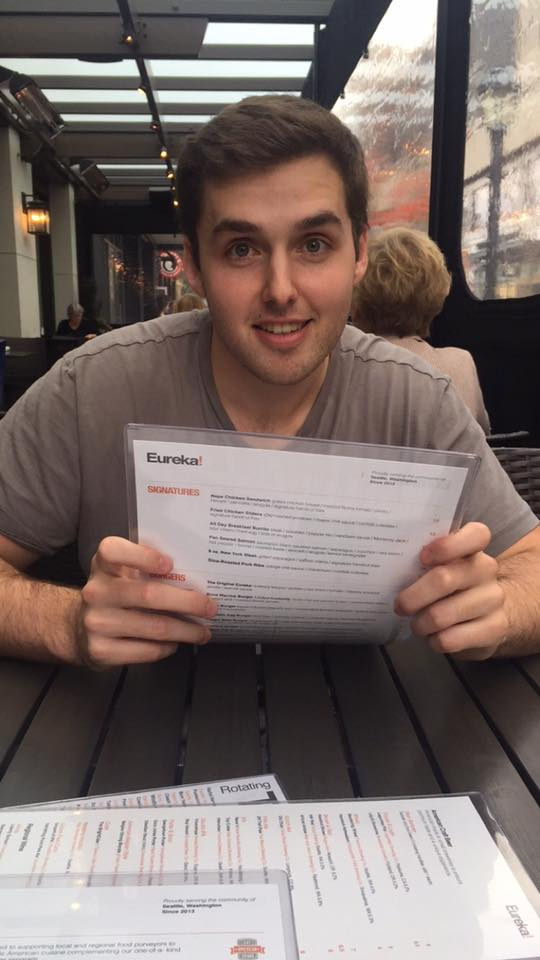

About Us
Ivy Markwell

Ivy is a fourth year Math Major at the University of Texas recieving the Elements of Computing certificate. Ivy loves cats, video games, and volunteering in her free time. She primarily worked on the data collection of the super heroes, coordinating team collaboration, and created the About Us page you are currently looking at.
Roberto Salinas

Roberto is a senior Mechanical Engineering student at the University of Texas at Austin and is pursuing Elements of Computing and Business Foundations certificates. Roberto enjoys Mexican food, soccer and playing video games. During this project Roberto contributed to design ideas, coding the 2nd-level model pages, and improving the code for the other pages in this project.
Nick Frawley

Nick is a senior Astronomy major at the University of Texas who loves dogs and all food. On this project he took a leading role in the development of the splash, individual pages, and creating most of the css design structure. Nick really went above and beyond making sure that the site looked amazing.
Shadiat Ojelade

Shadiat Ojelade is a Political Science Major with a Business, Computer Science, and Statistics Certificate and a minor in Math at the University of Texas. She loves SuperHeroes, beauty and fashion. She hopes to become a lead Marketing Product officer after she gets her MBA. On this project, Shadiat was the lead content researcher and part of the development team for the splash and individual pages.
Kyle Kimery

Kyle is a senior Physics Major at the University of Texas, pursuing the Elements of Computing certificate. In his spare time, Kyle enjoys Tex-Mex food and classic sci-fi literature. During this project Kyle was involved in site hosting, administrative duties, design decisions, quality assurance, and the writing of the technical report.